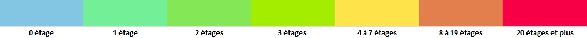

Thème par défaut pour consulter Plan IGN. Ce style affiche les données de tous les thèmes Plan IGN.
Version du plan IGN qui réduit le contraste en «blanchissant» les données,
cela facilite la lecture de données superposées plus contrastées
Version du plan IGN qui enlève la couleur, ce qui permet de faciliter la superposition
de données métiers «colorées» sur le fond Plan IGN.
Version du plan IGN qui enlève les toponymes ce qui réduit la quantité d’informations visibles à l’écran.
Version du plan IGN qui permet de combiner le fonds Photographies aériennes avec les toponymes du Plan IGN
Version du plan IGN qui permet de combiner le fonds Photographies aériennes avec les infos essentielles du Plan IGN.
Style d'affichage plus visible en cas de contre-jour.
Certains personnes qui ont des problèmes de vue peuvent aussi apprécier le contraste
Style d'affichage ressemblant à d’anciens fonds (Plan IGN v1) ou d’autres fonds actuels
(SCAN 25, la carte topo classique de l’IGN).
Style d'affichage épuré.
Le découpage administratif du territoire français (commune, arrondissement départemental, département, région...).
Il couvre l'ensemble des départements français, y compris les départements et régions d'outre-mer (DROM). Les collectivités d'outre-mer (COM) ne sont pas couvertes par ce produit.
Thème par défaut pour consulter le Parcellaire Express (PCI).
Il s’agit du thème par défaut pour consulter l’ensemble de la BDTOPO®.
Ce style affiche les données de tous les thèmes BDTOPO® en reprenant à l’identique la symbolisation
et les notions de niveaux d’affichage des projets cartographiques ArcGIS et QGIS proposés lors du téléchargement.
Affiche uniquement les bâtiments de la BDTOPO®.
Affiche uniquement le réseau et les surfaces hydrographiques de la BDTOPO®.
Affiche le réseau routier (y compris les chemins et sentiers) de la BDTOPO®.
Affiche une symbologie spécifique qui interroge l'attribut « date de construction » de la classe bâtiment.
Plus foncé : plus ancien / plus clair : plus récent. Ce style permet par exemple de visualiser
les périmètres des quartiers historiques des villes .
Affiche une symbologie spécifique qui interroge l'attribut « étage » de la classe bâtiment.
Voici la légende associée :
